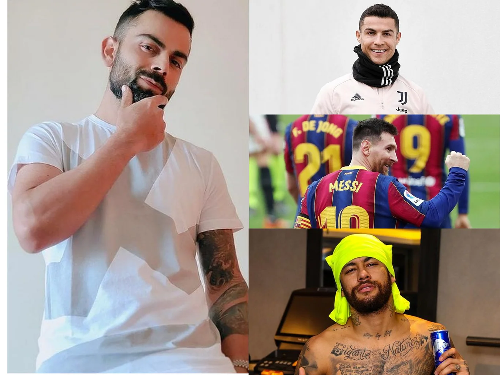

| রোনালদো-মেসি- নেইমার |
|---|
|
ক্রিকেট দুনিয়ায় বিরাট কোহলিই সবচেয়ে বড় তারকা। গত এক দশকের সেরা ক্রিকেটার। ভারতের মতো সবচেয়ে প্রভাবশালী ক্রিকেট শক্তির দেশের অধিনায়ক। বলিউডের শীর্ষ এক অভিনেত্রী আনুশকা শর্মার স্বামী। সব মিলিয়েই ব্র্যান্ডের দুনিয়া কোহলির ধারেকাছে নেই। প্রথম কোনো ক্রিকেটার হিসেবে এক চুক্তিতেই ১০০ কোটি রুপির চুক্তি করেছেন পণ্য দূতিয়ালিতে। এখন পর্যন্ত যা বলা হলো, তার সবই বলার জন্য একটি মাত্রা ঠিক করে রাখা হয়েছে—ক্রিকেটের ক্ষেত্রে। বিশ্বের সব খেলাধুলার ক্ষেত্রে কোহলি বেশ পিছিয়েই আছেন। বিশ্বের সবচেয়ে জনপ্রিয় খেলার তালিকায় ক্রিকেটের বেশ পিছিয়ে থাকা তারকা হিসেবে ক্রিকেটারদেরও পিছিয়ে দেয়। ফোর্বসের সবচেয়ে ধনী অ্যাথলেটদের তালিকায়ও তাই যেখানে শীর্ষে নিয়মিত ক্রিস্টিয়ানো রোনালদো, লিওনেল মেসিকে দেখা যায়, সেখানে কোহলিদের কোনোমতে ১০০-তে ঢুকেই সন্তুষ্ট থাকতে হয়।  |
| বিশ্বের দ্বিতীয় জনবহুল দেশের প্রিয় খেলা ক্রিকেট হওয়ায় অন্তত একদিক থেকে রোনালদো-মেসি-নেইমারদের সঙ্গে সংক্ষিপ্ত এক তালিকায় ঢুকে পড়েছেন কোহলি। আর সেটা হলো ইনস্টাগ্রামে অনুসারী সংখ্যাতে। মাত্র চতুর্থ খেলোয়াড় হিসেবে ইনস্টাগ্রামে ১০ কোটি অনুসারী জোগাড় করেছেন কোহলি। |
| ব্রাজিল তারকা সম্মান বাঁচালেন রিয়ালের! |
|---|